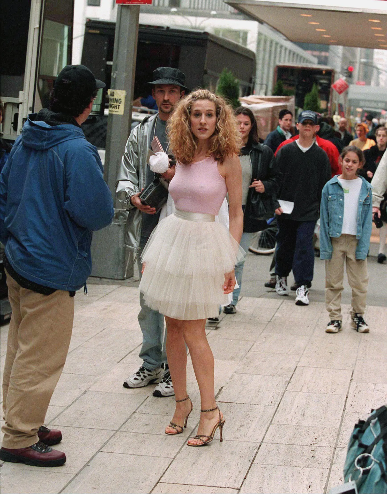
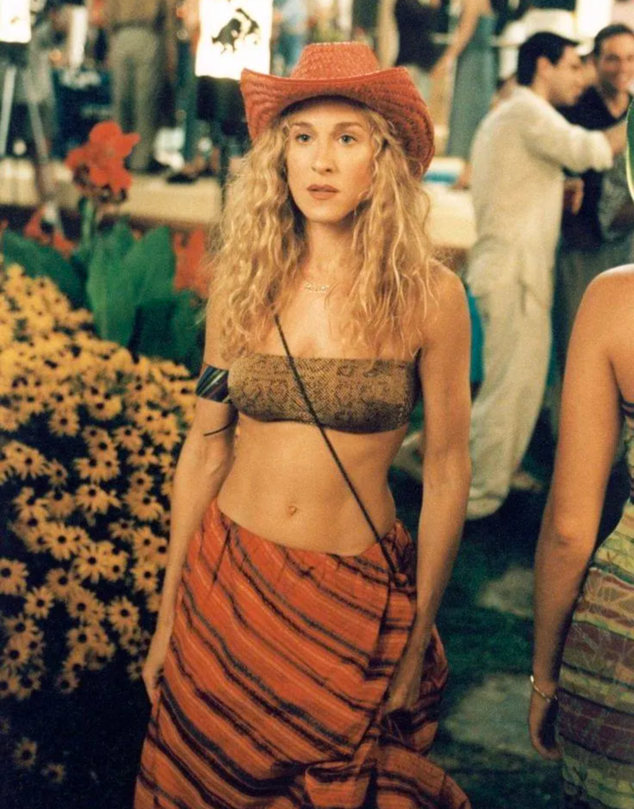
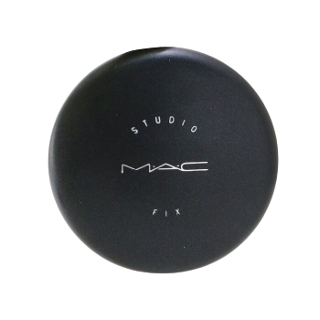
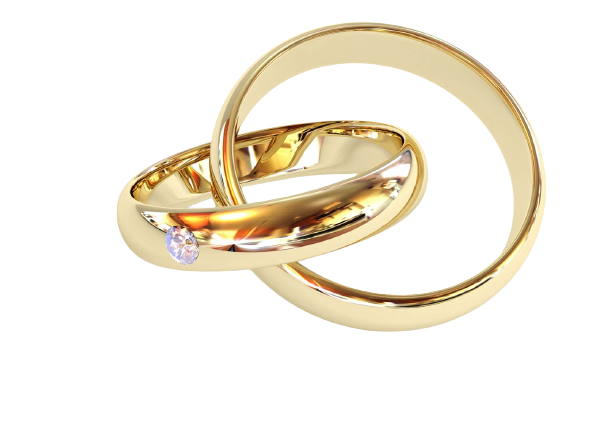
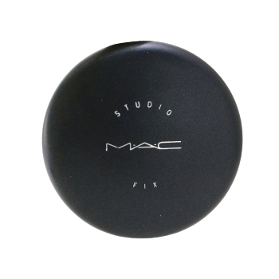
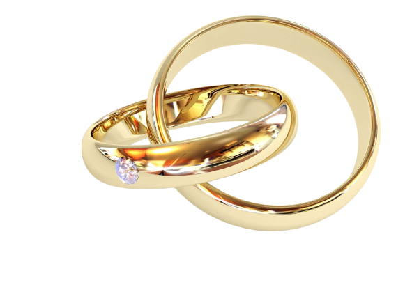

-

Zelfs degenen die geen enkele Sex and the City aflevering hebben gekeken, zullen deze look herkennen. Het is eerste outfit van Carrie - een tutu gecombineerd met een lichtroze hemdje en sandalen met bandjes voor de openingsscène van de show - en het zette de toon voor wat nog zou komen. Enkele jaren geleden onthulde kostuumontwerper Patricia Field dat ze de tutu uit een showroombak had gehaald en deze voor slechts $5 had gekocht.
-

Als je de Hamptons noemt, denken de meeste mensen aan verzorgde tuinen, ongerepte witte huizen en turquoise zwembaden. Maar voor Carrie was een bezoek aan het strandverblijf van de miljonairs blijkbaar een uitgelezen kans voor haar ode aan het Wilde Westen. In seizoen 2, aflevering 17, ontmoet Ms Bradshaw Mr Big en zijn vriendin Natasha terwijl ze gekleed is in een pythonprint tietentube, gestreepte sarong, een cowboyhoed en haar beroemde "Carrie"-ketting.
-

Carrie werd het onofficiële postermeisje voor John Galliano's beroemde krantenjurk, voor het eerst gedragen door Angie Schmidt in zijn herfst/winter 2000 Christian Dior show. Carrie draagt dit jurkje in seizoen 3 aflevering 17, "What Goes Around Comes Around", wanneer ze Natasha weer eens tegen het lijf loopt in een restaurant. Carrie droeg de jurk later opnieuw in de tweede (veelgeprezen) Sex and the City-film, zoals hierboven te zien is.
 


